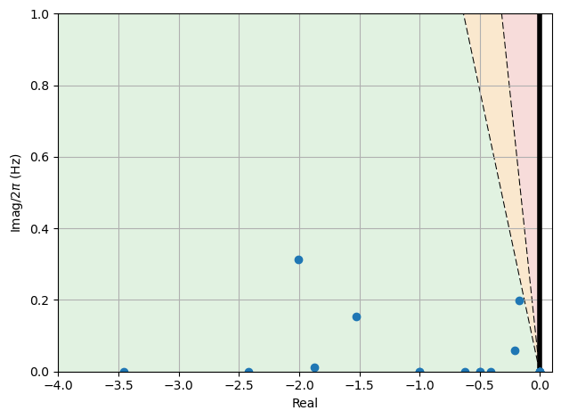
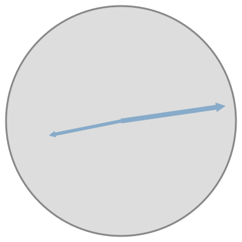
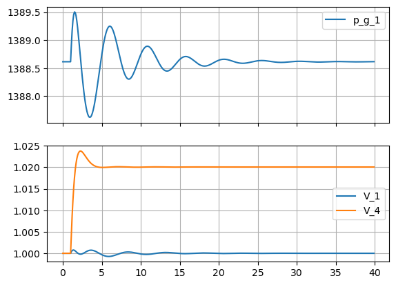

NTS base case#

from pydae.bmapu import bmapu_builder
grid = bmapu_builder.bmapu('nts_base.json')
grid.checker()
grid.uz_jacs = True
grid.verbose = False
grid.build('nts')
import numpy as np
import matplotlib.pyplot as plt
from pydae.bmapu.lines import change_line
import pydae.ssa as ssa
from IPython.core.display import HTML,SVG
import nts
lf = 1.0
params = {'p_c_1':0.935*lf, # generator at bus 1 power reference
'P_2':-1250e6*lf,'P_3':-4000e6*lf, # loads
}
model = nts.model()
change_line(model,'2','3',R_pu=0.0,X_pu=0.6,S_mva=100)
model.ini(params,'xy_0.json')
model.save_xy_0('xy_1.json')
S_n_1,S_n_4,p_g_1,p_g_4 = model.get_mvalue(['S_n_1','S_n_4','p_g_1','p_g_4'])
print(f'P_g1 = {p_g_1*S_n_1/1e6:0.0f} MW, P_g4 = {p_g_4*S_n_4/1e6:0.0f} MW')
model.report_y()
P_g1 = 1389 MW, P_g4 = 3861 MW
V_1 = 1.00
theta_1 = 0.22
V_2 = 0.98
theta_2 = 0.07
V_3 = 0.99
theta_3 = -0.95
V_4 = 1.00
theta_4 = -0.83
V_5 = 0.98
theta_5 = 0.07
i_d_1 = 0.86
i_q_1 = 0.40
p_g_1 = 0.93
q_g_1 = 0.18
v_f_1 = 2.42
p_m_ref_1 = 0.93
p_m_1 = 0.93
v_pss_1 = -0.00
i_d_4 = 0.64
i_q_4 = 0.44
p_g_4 = 0.77
q_g_4 = 0.11
v_f_4 = 1.84
p_m_4 = 0.78
omega_coi = 1.00
p_agc = -0.12
Small signal analysis#
ssa.A_eval(model);
ssa.damp_report(model).round(2).sort_values('Damp')
| Real | Imag | Freq. | Damp | |
|---|---|---|---|---|
| Mode 15 | -0.17 | -1.24 | 0.20 | 0.14 |
| Mode 14 | -0.17 | 1.24 | 0.20 | 0.14 |
| Mode 22 | -0.21 | -0.38 | 0.06 | 0.48 |
| Mode 21 | -0.21 | 0.38 | 0.06 | 0.48 |
| Mode 12 | -2.01 | -1.96 | 0.31 | 0.71 |
| Mode 11 | -2.01 | 1.96 | 0.31 | 0.71 |
| Mode 17 | -1.53 | 0.96 | 0.15 | 0.85 |
| Mode 18 | -1.53 | -0.96 | 0.15 | 0.85 |
| Mode 7 | -9.59 | -3.67 | 0.58 | 0.93 |
| Mode 6 | -9.59 | 3.67 | 0.58 | 0.93 |
| Mode 9 | -6.67 | 1.50 | 0.24 | 0.98 |
| Mode 10 | -6.67 | -1.50 | 0.24 | 0.98 |
| Mode 5 | -13.11 | -2.04 | 0.33 | 0.99 |
| Mode 4 | -13.11 | 2.04 | 0.33 | 0.99 |
| Mode 28 | -0.00 | 0.00 | 0.00 | 1.00 |
| Mode 27 | -0.41 | 0.00 | 0.00 | 1.00 |
| Mode 29 | -0.00 | 0.00 | 0.00 | 1.00 |
| Mode 30 | -0.00 | 0.00 | 0.00 | 1.00 |
| Mode 26 | -0.50 | 0.00 | 0.00 | 1.00 |
| Mode 25 | -0.50 | 0.00 | 0.00 | 1.00 |
| Mode 24 | -0.63 | 0.00 | 0.00 | 1.00 |
| Mode 1 | -1.00 | 0.00 | 0.00 | 1.00 |
| Mode 16 | -2.42 | 0.00 | 0.00 | 1.00 |
| Mode 20 | -1.88 | -0.08 | 0.01 | 1.00 |
| Mode 19 | -1.88 | 0.08 | 0.01 | 1.00 |
| Mode 31 | -0.00 | 0.00 | 0.00 | 1.00 |
| Mode 13 | -3.45 | 0.00 | 0.00 | 1.00 |
| Mode 8 | -10.18 | 0.00 | 0.00 | 1.00 |
| Mode 3 | -23.74 | 0.00 | 0.00 | 1.00 |
| Mode 2 | -47.29 | 0.00 | 0.00 | 1.00 |
| Mode 23 | -1.00 | 0.00 | 0.00 | 1.00 |
| Mode 32 | -0.00 | 0.00 | 0.00 | 1.00 |
ssa.plot_eig(model.eigvalues, x_min=-4,x_max=0.1,y_min=0,y_max=1);

Participation factors#
ssa.participation(model)['Mode 15'].abs().round(2).sort_values(ascending=False)
delta_1 0.39
omega_1 0.30
omega_4 0.19
delta_4 0.12
x_lpf7_1 0.06
x_wo2_1 0.04
x_wo1_1 0.04
xi_v_1 0.03
x_ll1_1 0.03
x_4_gov_4 0.02
x_5_gov_4 0.02
x_wo3_1 0.02
e1q_1 0.02
x_ll3_1 0.02
x_3_gov_4 0.01
x_6_gov_4 0.01
e1d_1 0.01
e1q_4 0.01
xi_v_4 0.00
x_cb_4 0.00
e1d_4 0.00
x_9_3_1 0.00
x_9_5_1 0.00
x_9_4_1 0.00
x_9_2_1 0.00
x_9_1_1 0.00
xi_imw_1 0.00
x_gov_2_1 0.00
x_gov_1_1 0.00
xi_m_1 0.00
x_a_1 0.00
xi_freq 0.00
Name: Mode 15, dtype: float64
ssa.participation(model)['Mode 15'].abs().round(2).sort_values(ascending=False)
delta_1 0.39
omega_1 0.30
omega_4 0.19
delta_4 0.12
x_lpf7_1 0.06
x_wo2_1 0.04
x_wo1_1 0.04
xi_v_1 0.03
x_ll1_1 0.03
x_4_gov_4 0.02
x_5_gov_4 0.02
x_wo3_1 0.02
e1q_1 0.02
x_ll3_1 0.02
x_3_gov_4 0.01
x_6_gov_4 0.01
e1d_1 0.01
e1q_4 0.01
xi_v_4 0.00
x_cb_4 0.00
e1d_4 0.00
x_9_3_1 0.00
x_9_5_1 0.00
x_9_4_1 0.00
x_9_2_1 0.00
x_9_1_1 0.00
xi_imw_1 0.00
x_gov_2_1 0.00
x_gov_1_1 0.00
xi_m_1 0.00
x_a_1 0.00
xi_freq 0.00
Name: Mode 15, dtype: float64
Mode shapes#
ssa.shape2df(model)
SVG(ssa.plot_shapes(model,mode='Mode 15', states=['omega_1', 'omega_4']))

Time domain simulation#
model.Dt = 0.01
params.update({'T_b_4':10.0,'v_ref_1':1.0,'v_ref_4':1.0,'K_a_4':200,"Droop_1":1000.0})
model.ini(params,'xy_1.json')
model.run( 1.0,{'v_ref_4':1.0})
model.run( 40.0,{'v_ref_4':1.02})
model.post();
fig,axes = plt.subplots(nrows=2, sharex=True)
axes[0].plot(model.Time, model.get_values('p_g_1')*model.get_value('S_n_1')/1e6,label='p_g_1')
#axes[0].plot(model.Time, model.get_values('p_m_1'),label='p_m_1')
axes[1].plot(model.Time, model.get_values('V_1'),label='V_1')
axes[1].plot(model.Time, model.get_values('V_4'),label='V_4')
for ax in axes:
ax.grid()
ax.legend()

fig,axes = plt.subplots(nrows=1, sharex=True)
axes.plot(model.Time, model.get_values('omega_1'),label='omega_1')
axes.plot(model.Time, model.get_values('omega_4'),label='omega_4')
axes.grid()
axes.legend()
<matplotlib.legend.Legend at 0x1f78e9e7d30>